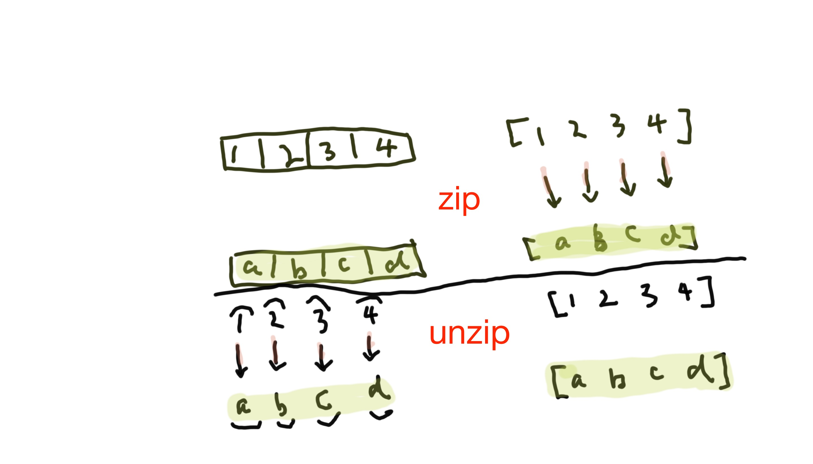

Transpose a matrix
transpose::[[a]] -> [[a]]
transpose [] = repeat []
transpose (x:cx) = zipWith(:) x $ transpose cx
transpose [[1, 2]
[3, 4]]
zipWith(:) [1, 2] $ transpose [[3, 4]]
[[3],[4] <= zipWith(:) [3, 4] $ transpose [[], []..]
zipWith(:) [1, 2] [[3], [4]] => [[1, 3], [2, 4]]
The difference among of data, type and newtype
data MyClass = Type1 | Type2 String | Type3 Int
class MyClass{
public Type1(){}
public Type2(String s){}
public Type3(Integer s){}
}
type Str = String
// typedef in C
typedef Str String;
// typedef in C
typedef struct Persons{
char[] name;
int age;
} Person;
Person p;
There is not type alias in Java unfortunately
newtype NewType a = NewType{name::String -> a}
Haskell Array
import Data.Array
import Data.Text.TDFA
let ar = array(0, 10) [(i, i*i) | i <- [0..10]]
ar ! 1 => 1
Factorial Function in Haskell
fac::Integer -> Integer
fac 0 = 1
fac n = n * fac (n - 1)
fac n = if n == 0 then 1 else n*fac (n - 1)
Find all prime number in Haskell
prime = sieve[2..]
where sieve(p:xs) = p:sieve[ x | x <- xs, mod x p /= 0]
-- sieve[2, 3, 4, 5, 6]
-- 2:sieve([3, 5])
-- 2:3:sieve([5])
-- 2:3:5:sieve([])
Split String in Haskell
break(\x -> isDigit x == False) "123dog"
-- ("123", "dog")
break(\x -> isSpace x) "123 dog"
-- ("123", " dog")
filter(\x -> isDigit x) "123dog"
-- "123"
let reg = mkRegex "[[:space:]]+"
splitRegex r "Agentina Switzerland Sweden"
-- ["Agentia", "Switzerland", "Sweden"]
-- split string at a particular position
splitAt 3 "Agentina" -- ["Age", "ntina"]
Haskell class and instance
Haskell class and instance are very similar to template/generic, interface in Java/C++
1. Create interface with generic
2. Implement it with concrete type
class Test a where
tme::a -> a -> Bool
data Dump = Dump{int::Int, str::String}
instance Test Dump where
tme d1 d2 = int d1 == int d2
-- test it
let d1 = Dump{int=3, str="dog"}
let d2 = Dump{int=3, str="dog"}
print $ tme d1 d2 -- True
Functor in Haskell
Functor is like a box contains something inside such as Maybe or [1, 2].
A function called fmap which takes a function and abox, fmap
applies the function to the value inside thebox and return abox contains the result.
Functor can be formally defined by a pair of functions $f_1 \mbox{ and } f_0$
so that $f_0:Ob(Hask) \rightarrow Ob(Hask)$ and $f_1:Hom(Hask) \rightarrow Hom(Hask)$
where $Hom(Hask)$ refers to the union of all sets $a \rightarrow b$ where $a, b \in Ob(Hask)$
so that the following holds
0. $id::a \rightarrow a $
1. If $g::a \rightarrow b $ then $f_1(g)::f_0(a) \rightarrow f_0(b)$
2. For all $a \in \mbox{Ob(Hask)}, \quad f_1(id_a) = id_{f_0(a)} $
3. If $g,h \in \mbox{Hom(Hask)} \mbox{ then } \quad f_1(g \circ h) = f_1(g) \circ f_1(h)$
Given $f_0(a) = \mbox{List } a \quad f_1(g) = \mbox{ map } g $
Prove $f_0$ and $f_1$ is a Functor
\begin{equation}
\begin{aligned}
&f_0(a) \Rightarrow \mbox{ List } a \quad f_0(b) \Rightarrow \mbox{ List } b \quad \mbox{ [from 1] } \\
&\Rightarrow \quad f_1(g):: \mbox{ List }a \rightarrow \mbox{ List }b \\
&\because \quad id_{f_0(a)}:: f_0(a) \rightarrow f_0(a) \\
&\therefore \quad id_{f_0(a)}:: \mbox{ List }a \rightarrow \mbox{ List }a \\
&\therefore \quad f_1(id_a):: \mbox{ List }a \rightarrow \mbox{ List }a \quad [\mbox{ from 1 } , \mbox{ sub } g::a \rightarrow b \mbox{ with } id::a \rightarrow a] \\
&\Rightarrow f_1(id_a) = id_{f_0(a)} \\~\\
&f_1( g \circ h) \Rightarrow \mbox{ map } g \circ h \Rightarrow \mbox{ map } g \circ \mbox{ map } h \quad \mbox{ [from def. of map]} \\
&f_1(g) \circ f_1(h) \Rightarrow \mbox{ map } g \circ \mbox{ map } h\\
&\Rightarrow f_1( g \circ h) = f_1(g) \circ f_1(h)\\
&\Rightarrow f_0 \mbox{ and } f_1 \mbox{ is a Functor} \\
\end{aligned}
\end{equation}
Picture of Functor
Not everything is Functor
MyMaybe is not a Functor since it does't satify the SECOND rule given from above
data MyMaybe a = MNothing | MyJust Int a deriving(Show)
instance Functor MyMaybe where
fmap f MNothing = MNothing
fmap f (MyJust counter a) = MyJust (counter + 1) (f a)
main = do
print "Hello World"
print $ fmap (+1) MNothing
print $ fmap (+1) (MyJust 0 2)
print $ fmap (+1) $ fmap (+1) (MyJust 0 2)
print $ fmap id (MyJust 0 2)
print $ id (MyJust 0 2)
-- fmap id (MyJust 0 2) != id (MyJust 0 2)
-- MyMaybe is not a Functor
Haskell IO action
Haskell separates pure functions from computations where side effects must be considered
by encoding those side effects as values of a particular type.
Specifically, a values of type [IO a] is an action, which if executed would product a value type of a
[IO a] is an action
getLine::IO String
putStrLn::String-> IO()
randomRIO::(Random a) => (a, a) -> IO a
Some IO goodness
-- define a function to print out "Hello World"
fun::IO()
fun = putStrLn "Hello World"
-- IO action is like a type.
putStrLn::String->IO () -- input is String, output is IO()
fun::String->String -- input is String, output is String
Chain the IO actions
(>>)::IO a -> IO b -> IO b
where if x and y are IO actions, then (x >> y) is the action performs x, dropping the result
and then performs y and return its result. Great, we can now write programs which do multiple things
main = putStrLn "Hello" >> putStrLn "World"
How to use the result of first action
(>>=)::IO a -> (a -> IO b) -> IO b
Now, (x >>= y) is the action first perform x, and capture its result, passing the result to f,
which then computes a second actions to be performed. The action is then carried out,
and its result is the result of overall computation.
It does seem to make sense, but what is the concrete example
The definition of readFile and print are as following
readFile::FilePath->IO String
print::String->IO ()
-- Chain readFile to print with >>=
readFile filePath >>=\file -> print file
What you can come up a picture about IO monad
Definition of const
const::a -> b -> a [keep the first argument and throw away the second argument]
It does't look that good from outside but some inside and be surprised [surprisedly]
const 3 4 -- output 3
>> can be defined in term of >>=
x >> y == x >>= const y
or
x >> y == x >>= \_ -> y
How to turn a value to an IO action which do nothing
return:: a -> IO a
Use IO in function
myReadFile::FilePath->IO String
myReadFile f = readFile f >>=\contents -> return(contents)
How to use myReadFile ?
contents <- myReadFile "file.txt"
print contents
IO are first class
create control structure with IO
repeat'::Int->IO () -> IO ()
repeat' n a = a >> repeat'(n-1) a
repeat' 3 putStr('x') -- output xxx
create for loop
for::[a]->(a -> IO()) -> IO ()
for [] f = return ()
for (x:xs) f = f x >> for xs f
for [1..10] (\x -> putStrLn x)
for [1..10] (\x -> do
putStrLn x
putStrLn x
)
Similarly
forM::(Traversable t, Monad m)=> t a -> (a -> m b) -> t(m b)
let s = ["dog", "cat"]
forM s $ \x -> print x
dog
cat
[(), ()]
-- get two Chars
getTwoChars::IO (Char, Char)
getTwoChars = getChar >>= \c1->
getChar >>= \c2 ->
return (c1, c2)
-- do statement
getTwoCharsDo::IO(Char, Char)
getTwoCharsDo = do {
c1 <- getChar;
c2 <- getChar;
return (c1, c2) }
-- get line with nested do
getMyLine::IO [Char]
getMyLine = do {
x <- getChar;
if x == '\n' then
return []
else do{
xs <- getMyLine;
return (x:xs)
}
}
Three weird primitives for composing and chaining together IO actions
(>>)::IO a -> IO b -> IO b [kill the first action's result and return the second action's result]
(>>=)::IO a -> (a -> IO b) -> IO b
return::a -> IO a [wrap a with IO and return it]
class Monad a where
(>>=)::IO a ->(a -> IO b) -> IO b
return::IO a -> (a -> IO b) -> IO b
class Monad m where
(>>=)::m a ->(a -> m b) -> m b
return::a -> m a
fun::[(Integer, Integer)]
fun n = do
x <- [-10..10]
if x > 0
then []
else return (n, n+1)
Monad [] is the instance of Monad
Weird Haskell const
Definition of const in GHC
const::a -> b -> a [keep the first argument and throw away the second argument]
const 1 2 -- output 1
map(const 3) [1..4] -- output [3, 3, 3]
Implement repeat function
repeat'::Int->a->[a]
repeat' n a = map(const a) [1..n]
repeat' 3 "x" -- output ["x", "x", "x"]
Implement length function
let length' = foldr(\_ acc -> 1 + acc) 0
let length' = foldr(const(1+)) 0
Three weird ways to define >>
(>>)::IO a -> IO b -> IO b [this is normal]
x >> y = x >>= const y [const is here to save you]
x >> y = x >>= \_ -> y [lambda! Ok, it does make sense]
x >> y = (. const) . (>>=) [that doesn't make sense for me at least]
let binder inside the map
// let .. in .. => let something then return something
let list = [1..10]
map(\x -> let square = x*x in square `mod` 3 == 0) list
-- let binding in Haskell
-- ax^2 + bx + c = 0
-- Find the root of the quadratic equation
roots a b c =
let discriminant= sqrt(b^2 - 4*a*c)
in ( (-b + discriminant)/(2*a), (-b - discriminant)/(2*a))
main = do
print (roots 3 9 1)
Haskell Binary Tree
-- binary tree in Haskell
data Tree a = Empty
| Node a (Tree a) (Tree a) deriving (Show)
binsert::Tree Integer->Tree Integer->Tree Integer
binsert Empty (Node a Empty Empty) = (Node a Empty Empty)
binsert (Node a l r) (Node b Empty Empty) = if b < a
then Node a (binsert l (Node b Empty Empty)) r
else Node a l (binsert r (Node b Empty Empty))
-- build Binary Tree from preorder and inorder
buildTree::[Char]->[Char]->Tree Char
buildTree _ [] = Empty
buildTree [] _ = Empty
buildTree preorder inorder = Node h (buildTree leftPre leftIn) (buildTree rightPre rightIn)
where
h = head preorder
leftIn = filter(\x->x < h) inorder
rightIn = filter(\x->x > h) inorder
leftPre = take (length rightIn) $ tail preorder
rightPre = subList preorder (length leftIn) $ length preorder
-- In order traversal in Binary Tree
inorder::Tree a->[a]
inorder Empty = []
inorder (Node a l r) = (inorder l) ++ [a] ++ (inorder r)
-- check whether a Binary Tree is symmetric
sym::Tree a ->Bool
sym Empty = True
sym (Node a Empty Empty) = True
sym (Node a l Empty) = False
sym (Node a Empty r) = False
sym (Node a l r) = sym l && sym r
-- find the maximum number of nodes in a Binary Tree
maxlen::Tree a->Integer
maxlen Empty = 0
maxlen (Node a l r) = 1 + max (maxlen l) (maxlen r)
-- find the maximum height of a Binary Tree
maxheight = maxlen - 1
What is difference between Expr and Expr a
It is hard to figure out the difference between Expr and Expr a in Haskell
data Expr is type Int only
data Expr a can be any type as 'a'
data Expr = Expr Int
| Add Expr Expr
| Mul Expr Expr
data Expr a = Con a
| Add (Expr a) (Expr a)
| Mul (Expr a) (Expr a)
If you implement Monoid in the modern GHC, you need to implement Semigroup
Semigroup $(\otimes, S)$:
let $a, b, c, d \in S$
\[
a \otimes b \otimes c = a \otimes (b \otimes c) \in S
\]
Monoid $(\otimes, S, I)$:
let $a, b, c \in S$
\begin{equation}
\begin{aligned}
a \otimes b \otimes c &= a \otimes (b \otimes c) \in S \\
I \otimes a &= a \otimes I
\end{aligned}
\end{equation}
Group $(\otimes, S, I)$
let $a, b, c \in S$
\begin{equation}
\begin{aligned}
a \otimes b \otimes c &= a \otimes (b \otimes c) \in S \\
I \otimes a &= a \otimes I \\
\forall a \in S, \exists a^{-1} \mid a \otimes a^{-1} &= I \\
\end{aligned}
\end{equation}
newtype Sum = Sum{getSum::Int} where deriving (Show)
class Semigroup a where
(<>):: a -> a -> a
instance Semigroup Sum where
(<>)::(Sum x) (Sum y) = Sum (x + y)
instance Monoid Sum where
mappend = (<>)
mempty = Sum 0
foldr((<>)) (Sum 0) [(Sum 1), (Sum 2)] => Sum{getSum = 3}
Why Haskell Record is so BAD
data Person = Person{
name::String,
age::Int
}
data Dog = Dog{
name::String,
age:Int
}
-- Record is just like function
name::Person -> String
age::Person -> Int
let rec = Person {name ="David", age = 3}
name rec -- return David
age rec -- return 3
You will get compiler error with two differnet records
From above two records: Person and Dog.
They both have name::Text
In Haskell, name is just a function, it is global.
This is why you can NOT have the same name and in different records.
Haskell record is similar to Java Class without methods.
You can not have function inside record in Haskell.
-- | If you are Java or C++ guys, you might do something like that:
-- | There are lots of typing without doing anything useful here:)
Java needs 23 lines of code
Haskell needs 4 lines of code
Of couse there are Setter and Getter generator like Lombok to do that work in Java
but you need to import the libraries and manage the dependency.
public class{
String firstName;
String lastName;
Int age;
public String getFirstName(){
return firstName;
}
public String getLastName(){
return lastName;
}
public Int getAge(){
return age;
}
public void setFirstName(String firstName){
this.firstName = firstName;
}
public void setLastName(String lastName){
this.lastName = lastName;
}
public void setAge(Int age){
this.age = age;
}
}
-- | /Users/cat/myfile/bitbucket/haskell/Record.hs
--
-- | create record called Person with three fields:
-- | firstName, lastName and age
data Person = Person {
firstName::String,
lastName::String,
age::Int} deriving (Eq)
-- | Set some values for the Person, it is very simple,
-- | You do not need Setter.
-- | --------------------------------------------------------------------------------
let person = Person{firstName = "Jonathan", lastName = "Michell", age = 20}
let animal = Person{firstName = "Nonhuman", lastName = "Michell", age = 20}
-- | How to access the fields, there are Getters for us by default
-- | --------------------------------------------------------------------------------
pp $ "firstName=" ++ firstName person -- Jonathan
pp $ "lastName =" ++ lastName person -- Michell
pp $ "age =" ++ show(age person) -- 20
-- | --------------------------------------------------------------------------------
Haskell Record with IORef
IORef is tricky to use initially if you are from Java or C++, If you combine Record with IORef
then it is harder to figure out how the syntax work
1. We want to create a Counter with two fields, both fields are Int type, nothing is revolutionary
2. Increate each fields by certain number
3. Show the certain field
Create Record with two fields:
1. Pos::IORef Int => $Pos \in \{IORef Int\}$
2. Up::IORef Int => $Up \in \{IORef Int\}$
data Count = Count{
pos :: IORef Int,
up :: IORef Int
}
1. Create Counter
2. Create incremental functions
3. Create the show function
makeCounter::Int->Int-> IO Count
makeCounter c u = do
c' <- newIORef c
u' <- newIORef u
return (Count c' u')
intPosCounter::Int->Count->IO()
intPosCounter n (Count c _) = modifyIORef c (+n)
intUpCounter::Int->Count->IO()
intUpCounter n (Count _ u) = modifyIORef u (+n)
showCounter::Count->IO()
showCounter (Count c u) = do
c' <- readIORef c
u' <- readIORef u
pp (show c' ++ " " ++ show u')
What does do-statement do in Haskell
do-statement is syntax sugar for Monad Computation??
readFileToList path >>= \x -> reverse x
do {
s <- readFileToList path
let s = reverse s
}
nameDo::IO String
nameDo = do putStr "What is your first name: "
first <- getLine
putStr "What is your last name: "
last <- getLine
let full = first ++ " " ++ last
putStrLn("full name " ++ full ++ " ")
return full
main = nameDo >>= \name -> print name
-- alternative
main = do
name <- nameDo
print name
How liftM can help you to simplify your IO code
liftM defintion:
liftM::(Monad m)=>(a -> b) -> m a -> m b
not::Bool -> Bool
not true = false
not false = true
liftM not
liftM::(Monad m)=>(Bool -> Bool) -> m Bool -> m Bool
Real world example with liftM
-- find all the file that does not exist from a list
filterM(\x -> doesFileExist x >>= \y -> return y == false) ["f1.x", "f2.x"]
-- if we find all the files DOES exist in the list, it is easy
filterM(doesFileExist) ["f1.x", "f2.x"]
-- better way to do with liftM
filterM((liftM not) . doesFileExist) ["list files"]
How to exit Haskell program
Single Thread:
main = do
print "start"
exitFailure
print "nothing to show"
That code will set exit code to 0
e.g. echo $? => 0
main = do
print "start"
exitWith(ExitFailure 3)
print "nothing to show"
e.g. echo $? => 3
You can use exitWith(...) to set exit code whatever you want
Multiple Thread is different story.
import Control.Exception.Safe
import System.Exit
import Control.Concurrent
main = do
print "start"
forkIO(exitWith(ExitFailure 3))
print "nothing to show"
echo $? => 0
You do not get 3 now,
plz take a look at exitWith::ExitCode -> IO a
forkIO creates worker thread, and
the exit code does not propagate to the parent thread
main = do
print "start"
concurrently (exitWith(ExitFailure 3)) $ do
print "nothing to show"
echo $? => 0
The exit code propagates to parent thread with concurrently,
zip and unzip in Haskell
zip ["dog", "cat"] [1, 2] => [("dog", 1"), ("cat", 2)]
unzip [("dog", 1"), ("cat", 2)] => ["dog", "cat"] [1, 2]

Simple Typeclass in Haskell
1. define a typeclass Shape with two constructors
Shape a is type class or type constructor
Circle Float Float Float is one constructor with three floats or value constructor
Rectangle Float Float Float Float is value constructor with four floats
-- Typeclass in Haskell
-- Shape is similar to interface in Java(but it is different)
-- Circle and Rectangle are similar to class in Java
-- sum type
data Shape = Circle Float Float Float | Rectangle Float Float Float Float deriving (Show)
area::Shape->Float
area(Circle _ _ r) = pi*r^2
area(Rectangle topx topy bottomx bottomy) = abs(bottomy - topy)*abs(bottomx - topx)
-- or
data Shape a = Circle a a a | Rectangle a a a a deriving (Show)
area::Shape Float -> Float
area (Circle _ _ r) = pi*r^2
area (Rectangle topx topy bottomx bottomy) = abs(bottomy - topy)*abs(bottomx - topx)
main = do
print("Typeclass in Haskell")
print(area $ Circle 3 4 5)
print(area $ Rectangle 3 4 5 8)
Sum all integers in a list in Haskell
-- Sum all the integer in a list
sumlist::[Int]->Int
sumlist [] = 0
sumlist (x:xs) = x+sumlist(xs)
Palindrome in Haskell
isPalindrome:: Eq a=>[a]->Bool
isPalindrome [a] = True
isPalindrome [x,y] = x == y
isPalindrome (x:xs) = x == (last xs) && isPalindrome(init(xs))
main = do
print ("aba="++ show(isPalindrome("aaa")))
Maximum of a list
--find the maximum of a list
maximum1'::(Ord a) =>[a]->a
maximum1' [] = error "empty list"
maximum1' [x] = x
maximum1' (x:xs)
| x > maxTail = x
| otherwise = maxTail
where maxTail = maximum1' xs
--find the maximum of a list without where
maximum2'::(Ord a) =>[a]->a
maximum2' [] = error "empty list"
maximum2' [x] = x
maximum2' (x:xs) = max x (maximum2' xs)
If else in Haskell
--if else in Haskell
mySign x =
if x < 0
then -1
else if x > 0
then 1
else 0
main = do
print (mySign(3))
Equation Guarding in Haskell
--Guards in Haskell
myGuards x
| x < 0 = -1
| x > 0 = 1
| otherwise = 0
main = do
print (myGuards(3))
let binding in Haskell
-- let binding in Haskell
-- ax^2 + bx + c = 0
-- Find the root of the quadratic equation
roots a b c =
let discriminane= sqrt(b^2 - 4*a*c)
in ( (-b + discriminant)/(2*a), (-b - discriminant)/(2*a))
main = do
print (roots 3 9 1)
Print all permutation in Haskell
myperm:: Eq a =>[a]->[[a]]
myperm [] = [[]]
myperm xs = [ x:ys | x <- xs , ys <- myperm(delete x xs)]
Tree Traversal: Preorder Inorder Postorder/DFS in Haskell
There are preorder inorder and postorder traversals
preorder: + a b
inorder: a + b
postorder: a b +
There are many applications from these traversals
1. We can rebuild the tree with preorder and inorder
2. inorder is the sorted order in Binary Search Tree
3. Quick sort is related to preorder
4. inorder can be used to check whether a BT is BST
5. postorder can be implemented with two stacks with recursion
6. Merge sort is essential the postorder
7. Quick sort is essential the preorder
8. preorder and postorder can be used in serialization and deseriazation
data Tree a = Empty
| Node a (Tree a) (Tree a) deriving Show
mytree = Node 'R'
(Node 'S'
(Node 'T' Empty Empty)
(Node 'U' Empty Empty)
)
(Node 'T'
(Node 'V' Empty Empty)
(Node 'W' Empty Empty)
)
preorderTraversal::Tree a ->[a]
preorderTraversal Empty = []
preorderTraversal (Node a l r) = a:(preorderTraversal l) ++ (preorderTraversal r)
inorderTraversal::Tree a ->[a]
inorderTraversal Empty = []
inorderTraversal (Node a l r) = (inorderTraversal l) ++[a]++(inorderTraversal r)
postorderTraversal::Tree a ->[a]
postorderTraversal Empty = []
postorderTraversal(Node a l r) = (postorderTraversal l) ++ (postorderTraversal r) ++ [a]
More Typeclass 2 in Haskell
--Typeclass 2 in Haskell
data Point = Point Float Float deriving(Show)
data Shape = Circle Point Float | Rectangle Point Point deriving (Show)
area::Shape->Float
area(Circle _ r) = pi*r^2
area(Rectangle (Point topx topy) (Point bottomx bottomy)) = abs(bottomy - topy)*abs(bottomx - topx)
main = do
print(area $ Circle (Point 1 4) 3)
print(area $ Rectangle (Point 1 4) (Point 2 7))
More Typeclass 3 in Haskell
-- Library/WebServer/Documents/zsurface/github/haskell/typeclass3.hs
-- Typeclass in Haskell
-- Shape is similar to interface in Java
-- Circle and Rectangle are similar to class in Java
data Point = Point Float Float deriving(Show)
data Shape = Circle Float Float Float | Rectangle Float Float Float Float deriving (Show)
--call constructor
circleShape::Shape
circleShape = Circle 1 2 3
rectangleShape = Rectangle 1 2 3 4
--list of typeclasses
listShape::[Shape]
listShape = [Circle 1 2 3, Rectangle 1 2 3 4]
main = do
print(circleShape)
print(rectangleShape)
print(listShape)
More Typeclass 4 in Haskell
--Library/WebServer/Documents/zsurface/github/haskell/typeclass4.hs
--Deconstructing type in Haskell
data Point = Point Float Float deriving(Show)
data Shape = Circle Float Float Float | Rectangle Float Float Float Float deriving (Show)
showShape::Shape->String
showShape(Circle x y radial) = show(x) ++ " "++show(y)++ " " ++ show(radial)
showShape(Rectangle x1 y1 x2 y2 ) = show(x1) ++ " "++show(y1)++ " " ++ show(x2)++" "++show(y2)
main = do
print(showShape(Circle 3 4 5))
print(showShape(Rectangle 1 2 3 4))
More Typeclass 5 in Haskell
data Foo = Bar | Baz Int
myfun::Foo->Int
myfun Bar = 1
myfun (Baz x) = x - 1
More Typeclass 6 in Haskell
data Person = Person String Integer String deriving Show
getAge::Person->Integer
getAge(Person _ n _) = n
getName::Person->String
getName(Person name _ _) = name
getInfo::Person->String
getInfo p@(Person _ _ _) = "(" ++ show(p) ++ ")"
More Typeclass 7 in Haskell
data Point a = Pt a a deriving(Show)
dist::Point Int-> Point Int -> Int
dist (Pt x0 y0) (Pt x1 y1) = (x0-x1)*(x0-x1) + (y0-y1)*(y0-y1)
main = do
print (Pt 1 3 :: Point Int)
print $ dist(Pt 1 4) (Pt 3 4)
data type in Haskell
data Point a = Pt a a
norm::(Point Int)->(Point Int)->Int
norm(Pt a1 b1) (Pt a2 b2) = a1*a2 + b1*b2
dist::(Point Int)->(Point Int)->Int
dist (Pt a1 b1) (Pt a2 b2) = norm (Pt a1 b1) (Pt a2 b2)
// in Java
class Point<T>{
Point(T t1, T t2){}
}
Following is java interface and two classes
interface Shape
{
public double getArea();
}
class Circle implements Shape
{
double x;
double y;
double radial;
public Circle(double x, double y, double radial)
{
this.x = x;
this.y = y;
this.radial = radial;
}
public double getArea()
{
return 3.14*radial*radial;
}
}
class Rectangle implements Shape
{
double topx;
double topy;
double bottomx;
double bottomy;
public Rectangle(double topx, double topy, double bottomx, double bottomy)
{
this.topx = topx;
this.topy = topy;
this.bottomx= bottomx;
this.bottomy= bottomy;
}
public double getArea()
{
return Math.abs(bottomx - topx)*Math.abs(bottomy - topy);
}
}
Crazy function in Haskell
f::()->()
f _ = ()
f1::Bool->Bool
f1 _ = () == ()
f2::Bool->Bool
f2 x = (1 == 2) == True
f3::Bool->Bool
f3 _ = False
f4::Bool->Bool
f4 undefined = False
f5::Bool->Bool
f5 undefined = undefined
f6::Bool->Bool
f6 _ = undefined
f7::Bool->Bool
f7 = undefined
f8::Bool->Bool
f8 = \x -> undefined
f9::Int->Int
f9 = \x -> x + 1
f10::Int->Int
f10 = \x -> f9 x
f11::Int->Int
f11 x = x + 1 + (f9 1)
f12::Int->Int
f12 = \x -> (x + 1)
Composite function in Haskell
-- function composition foldable
f1::Int->Int
f1 a = a * 10
f2::Int->Int
f2 a = a - 10
compose = (f1.f2) 10
Foldable in Haskell
-- identity = []
concat2::[[Int]]->[Int]
concat2 vals = foldr (\val acc->val ++ acc) [] vals
-- concat2 [[1, 2], [3, 4]] = [1, 2] ++ ([3, 4] ++ []) = [1, 2, 3, 4]
fo = foldr ((:)) [] [1, 2, 3]
-- output [1, 2, 3]
-- alternative definition of map
map'::(a->b)->[a]->[b]
map' f = foldr ((:).f) []
-- map' (1+) 1 [1, 2, 3] = [2, 3, 4]
-- identity = 0
sum1::[Int]->Int
sum1 vals = foldl (\x y-> x + y) 0 vals
-- identity = 1
product1::[Int]->Int
product1 vals = foldl (\x y-> x * y) 1 vals
-- identity = []
concat1::[[Char]]->String
concat1 vals = foldl (\x y->concat[x, y]) [] vals
instance and class in Haskell
--class Eq a where
--(==), (/=) :: a -> a -> Bool
--x /= y = not (x == y)
--x == y = not (x /= y)
-- instance class
data Myfoo = Myfoo{int::Integer, str::String}
instance Eq Myfoo where
(Myfoo int1 str1) == (Myfoo int2 str2) = (int1 == int2) && str1 == str2
Functor in Haskell
data MyMaybe a = MyJust a | MyNothing deriving (Show)
instance Functor MyMaybe where
fmap f MyNothing = MyNothing
fmap f (MyJust a) = MyJust (f a)
Algebraic Data Type in Haskell
Algebraic Data type - Algebraic refers to the property that an algebraic data type is created
by algebraic operations such as sum and product. There
Sum is alternation[logic OR operator][A | B, meaning A or B but not both, e.g. enum in Java/C++]
Product is combination[logic AND operator][A B, meaning A and B together, e.g. tuple, record]
data Maybe a = Just a | Nothing
There are two constructors:
Just is one constructor with one parameter a
Nothing is other constrcutor with no parameter
-- Try to simulate Maybe in Java
interface Maybe{ }
class Just implements Maybe{
public Just(String s){ }
}
class Nothing implements Maybe{
public Nothing(){}
}
-- City is similar to Enum in Java/C++
-- public enum City
-- {
-- PaloAlto,
-- MountainView
-- Sunnyvale
-- }
-- City city = MountainView
--
data City = PaloAlto
| MountainView
| Sunnyvale
deriving(Show)
city::City
city = MountainView
listofCity::[City]
listofCity = [PaloAlto, Sunnyvale, MountainView]
isGoodCity::City -> Bool
isGoodCity PaloAlto = True
isGoodCity MountainView = True
isGoodCity Sunnyvale = False
data MyType = Failture
| OK (Double)
deriving Show
fa = Failture
ok = OK 3.31
safeDiv::Double->Double->MyType
safeDiv _ 0 = Failture
safeDiv x y = OK(x/y)
f::String->MyType
f "" = Failture
f "cat" = OK (100)
f "dog" = OK (200)
f _ = OK 3.3
main = do
print (isGoodCity PaloAlto)
print (isGoodCity Sunnyvale)
print (fa, ok)
print (f "")
print (f "cat")
print (f "dog")
print (safeDiv 3 0)
print (safeDiv 3 4)
foldr and foldl in Haskell
-- folding examples
main = do
print(foldr (-) 1 [2, 3, 4]) -- output 2
print(foldl (-) 1 [2, 3, 4]) -- output -8
let fr = foldr (\x y->concat["(",x,"-",y,")"]) "1" (map show [2, 3, 4])
print(fr)
--output "(2-(3-(4-1)))"
let fl = foldl (\x y->concat["(",x,"-",y,")"]) "1" (map show [2, 3, 4])
print(fl)
--output "(((1-2)-3)-4)"
// foldr (-) 1 [2, 3, 4] output = 2
public static int foldr(int n){
if(n == 4){
return n - 1;
}
else{
return n - foldr(n + 1);
}
}
// foldl (-) 1 [2, 3, 4] output = -8
public static int foldl(int n){
if(n == 2){
return 1 - n;
}else{
return foldl(n-1) - n;
}
}
Map and Foldr in Haskell
Map can be defined by foldr, let's look at the definition of map in Haskell
map::(a->b)->[a]->[b]
map f (x:xs) = f x : map f xs
foldr f a [n1, n2, n3] = n1 `f` (n2 `f` (a `f` n3))
-- e.g.
foldr (+) 1 [2, 3, 4] = 2 + (3 + (4 + 1))
foldr ((:)) [] [2, 3, 4] = 2:3:4:[] = [2, 3, 4]
map'::(a->b)->[a]->[b]
map' f = foldr((:)) []
-- remove brackets
foldr (++) [] [["a", "b"], ["c"]]
-- output ["a", "b", "c"]
let expressions and where causes local variable binding in Haskell
-- where cause and let binding in Haskell
--
-- let binding in Haskell
-- ax^2 + bx + c = 0
-- Find the root of the quadratic equation
roots a b c =
let discriminant= sqrt(b^2 - 4*a*c)
in ( (-b + discriminant)/(2*a), (-b - discriminant)/(2*a))
longest [] = []
longest (x:xs) = if length x > length (longest xs) then x else (longest xs)
newlongest [] = []
newlongest (x:xs) = if length x > length max then x else max
where max = newlongest xs
main = do
print (roots 3 9 1)
print (longest [[],[1],[1,2]])
print (newlongest [[],[1],[1,2]])
simple case in Haskell
Case in Haskell is like switch statement in Java, except it is more beautiful!
suffixed n = show n ++ suffix
where
suffix
| n `mod` 100 `div` 10 == 1 = "th"
| otherwise = case n `mod` 10 of
1 -> "st"
2 -> "nd"
3 -> "rd"
_ -> "th"
result = map suffixed [1..40]
practical case in Haskell
fun x = case x `mod` 2 of
0 -> "even"
_ -> "odd"
fun' x = answer
where answer
| x < 10 = "less then 10"
| x == 10 = "equal 10"
| otherwise = case x `mod` 2 of
0 -> "greater than 10 even"
_ -> "greater than 10 and odd"
First OpenGL Hello World in Haskell
import Graphics.UI.GLUT
myPoints::[(GLfloat, GLfloat, GLfloat)]
myPoints = [(sin(2*pi*k/12), cos(2*pi*k/12), 0) | k <- [1..12]]
main::IO()
main = do
(_progName, _args) <- getArgsAndInitialize
_window <- createWindow "Hello World"
displayCallback $= display
mainLoop
display::DisplayCallback
display = do
clear [ ColorBuffer]
renderPrimitive Triangles$ mapM_ (\(x, y, z) -> vertex $ Vertex3 x y z) myPoints
flush
OpenGL Vertex and Color in Haskell
import Graphics.UI.GLUT
main::IO()
main = do
(_progName, _args) <- getArgsAndInitialize
_window <- createWindow "OpenGL Vertex and Color in Haskell"
displayCallback $= display
mainLoop
display::DisplayCallback
display = do
let color3f r g b = color $ Color3 r g (b::GLfloat)
vertex3f x y z = vertex $ Vertex3 x y (z::GLfloat)
clear [ColorBuffer]
renderPrimitive Quads $ do
color3f 1 1 0
vertex3f 0 0 0
vertex3f 0 0.2 0
vertex3f 0.2 0.2 0
vertex3f 0.2 0 0
color3f 0 1 0.5
vertex3f 0 0 0
vertex3f 0 (-0.2) 0
vertex3f 0.2 (-0.2) 0
vertex3f 0.2 0 0
color3f 0 0.5 1
vertex3f 0 0 0
vertex3f 0 (-0.2) 0
vertex3f (-0.2) (-0.2) 0
vertex3f (-0.2) 0 0
color3f 0.3 0.3 0.3
vertex3f 0 0 0
vertex3f 0 0.2 0
vertex3f (-0.2) 0.2 0
vertex3f (-0.2) 0 0
flush
Map Examples in Haskell
Haskell Map Example
map::(a->b) -> [a] -> [b]
map f xs is the list obtained by apply f to each element of xs
map f [1..3] = [f(1) f(2) f(3)]
map f [x1, x2, ...] = [f(x1), f(x2), ...]
f::Int->Int->Int
f a b = a - b
main = do
print(map (+ 2) [1..3]) -- (2 + 1) (2 + 2) (2 + 3)
print(map (2 -) [1..3]) -- (2 - 1) (2 - 2) (2 - 2)
print(map ((-) 2) [1..3]) -- (2 - 1) (2 - 2) (2 - 3)
print(map (mod 2) [1..3]) -- (2 mod 1) (2 mod 2) (2 mod 3)
print(map (`mod` 2) [1..3]) -- (1 mod 2) (2 mod 2) (3 mod 2)
print(map (/ 2) [1..3]) -- (2 / 1) (2 / 2) (2 / 3)
print(map (* 2) [1..3]) -- (2 * 1) (2 * 2) (2 * 3)
print(map (f 10) [1..3]) -- (10 - 1) (10 - 2) (10 - 3)
print(map (`f` 10) [1..3]) -- (1 - 10) (2 - 10) (3 - 10)
Unwrap Monad, Find Index and SubString in Haskell
1. Unwrap the Maybe Monad
2. Find the Index of Char in a String
3. SubString of two Indexes of string
Similar Haskell functions
"abc" !! 1 -> 'b'
elemIndex 'a' "ba" -> Just 1
isInfixOf "ab" "efab" -> True
findIndex (== 'a') "bac" -> 1
findIndex (> 'a') "bac" -> 2
--unwrap Maybe
open::Maybe a->a
open Nothing = error "error"
open (Just a) = a
-- find the index of Char
findChar::Char->String->Int
findChar _ [] = -1
findChar a (x:xs) = if a /= x then ((findChar a xs) + 1) else 0
-- substring from l to r
range::Int->Int->String->String
range l r str = if l >= length str || r >= length str then [] else (if l <= r then str !! l :[] ++ range (l+1) r str else [])
Regular Expression in Haskell
mymatch regex f s =
case matchRegexAll regex s of
Nothing->s
Just(before, matched, after, l)->before ++ f l ++ after
t1 = filter (=~ "is") ["this is it"]
-- ["this is it"]
ignoreCase = makeRegexOpts(defaultCompOpt .|. compIgnoreCase) defaultExecOpt
t3 = filter (matchTest $ ignoreCase "apple") ["My Apple"]
-- ["My Apple"]
t4 = subRegex(mkRegex "p+") "apple sucks" "PP"
-- aPPle sucks
t5 = mymatch(mkRegex "man([0-9])") (\[n]->"woman" ++ n) "/cat/man3/dog.txt"
-- "/cat/woman3/dog.txt"